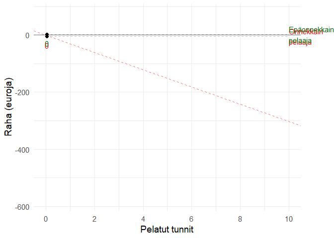
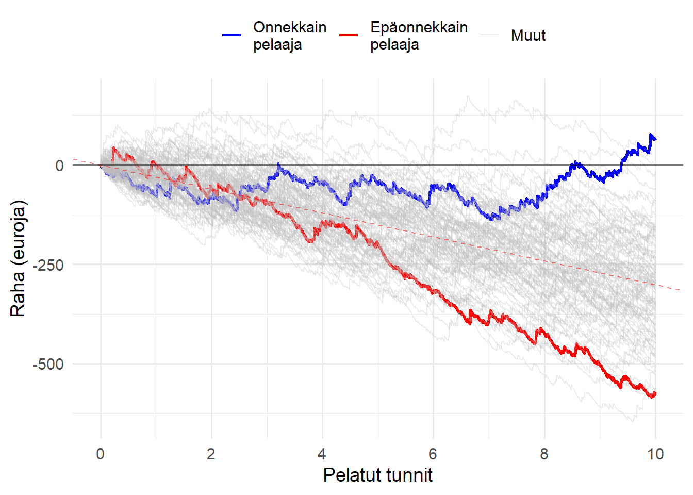
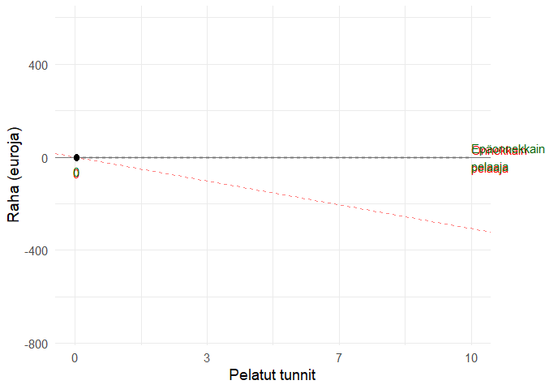
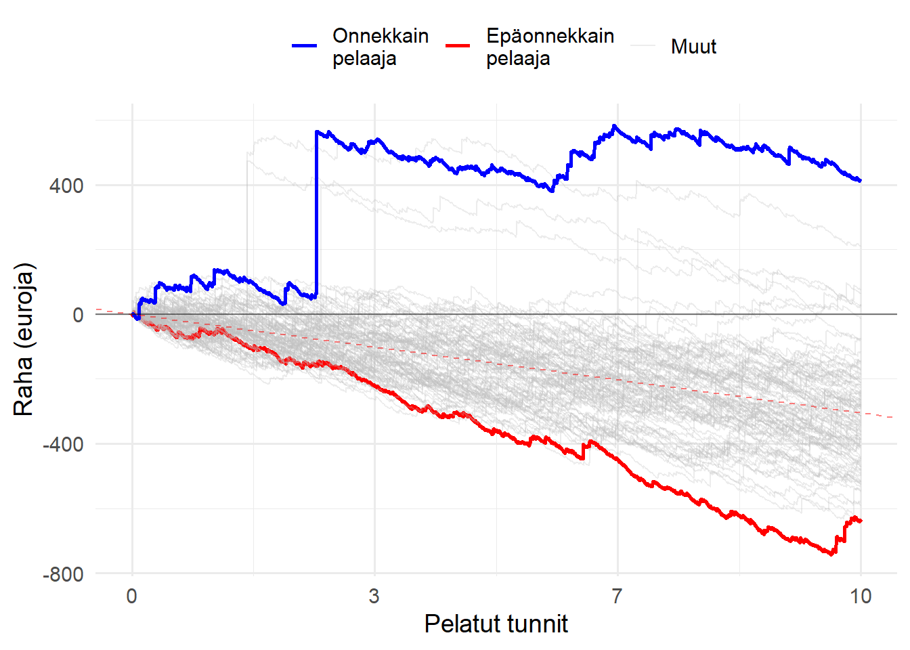
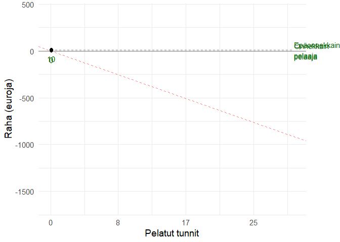
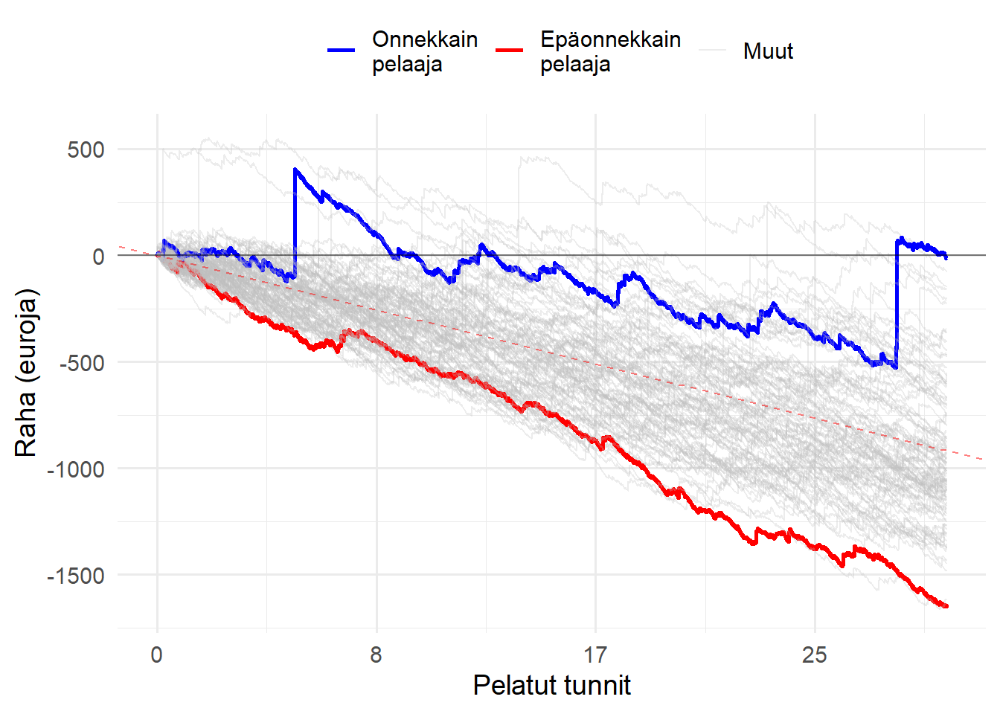

Videopokerisimulaattorin tarkoitus on havainnollistaa tyypillisen videopokeripelin voittojen ja häviöiden jakautumista useiden eri pelaajien välillä. Simulaattori on viestinnällinen työkalu. Se on tarkoitettu erityisesti pelaajille, jotka eivät ole perehtyneet rahapelien logiikkaan ja joilla on tavanomaista korkeampi rahapeliongelman riski. Videopokerisimulaation taustaoletukset:
TL;DR: Alla esitetään videopokerisimulaatioita tyypillisestä videopokeripelistä. Mitä enemmän peliä pelaa, sitä enemmän rahaa häviää. Jotkut harvat ja onnekkaat saattavat jäädä pelistä lyhyellä aikavälillä voitolle, erityisesti jos pelissä on korkea volatiliteetti. Riittävän pitkällä aikavälillä kaikki kuitenkin lopulta häviävät.
library(tidyverse)
library(gganimate)
library(transformr)
library(truncnorm)
casino_simulator <- function(rounds, players, topbottom = F, volatility = "low") {
simulations = data.frame(nrow = 0)
if (volatility=="low") {
payout <- c(100, 50, 30, 15, 8, 7, 3, 2, 0) - 1
probability <- c(0.002, 0.011, 0.236, 1.151, 1.101, 1.123, 7.445, 12.928, 76.003)/100
ev <- sum(payout*probability) #ev = -0.10045
}
else if (volatility=="med") {
payout <- c(500, 65, 45, 13, 7, 6, 3, 2, 0) - 1
probability <- c(0.002, 0.011, 0.236, 1.151, 1.101, 1.123, 7.445, 12.928, 76.003)/100
ev <- sum(payout*probability) #ev = -0.10066
}
else {
payout <- c(2000, 50, 33, 14, 7, 5, 3, 2, 0) - 1
probability <- c(0.002, 0.011, 0.236, 1.151, 1.101, 1.123, 7.445, 12.928, 76.003)/100
ev <- sum(payout*probability) #ev = -0.10035
}
for (i in 1:players) {
test <- sample(payout, rounds, replace=TRUE, prob=probability)
test <- data.frame(run = test)
names(test)[1] <- i
simulations <- cbind(simulations, cumsum(test))
simulations$nrow <- NULL
}
max_value <- which(tail(simulations, 1) == max(tail(simulations, 1))) # Among the last row, which column has the highest value
min_value <- which(tail(simulations, 1) == min(tail(simulations, 1))) # Among the last row, which column has the lowest value
#How many are winning at the end
winners <- length(which(tail(simulations, 1) > 0))
simulations$ID <- seq.int(nrow(simulations))
simulations.long <- simulations %>%
gather(key, value, -ID) %>%
group_by(key) %>%
dplyr::mutate(profit = factor(ifelse(value > 0, 1, 0)), # Is the player winning or not
profitriskcumsum = cumsum(as.numeric(profit)-1), # cumulative number of rounds in profit
randomrisk = which(sample(c(0,1), n(), prob=c(.9999603, 1-.9999603), replace=T) == 1)[1], #among n(), produce a moment when problem gambling starts. Probability: 84 (one full week) hours of playing one has 50% chance of becoming "problem gambler" (or "high risk gambler"). 84 * 60 minutes * 5 rounds = 25200 (1- 1/25200 = .9999603)
randomrisk = ifelse(is.na(randomrisk), n(), randomrisk), #if prob gambling doesn't start, replace NA with total length of sample
randomrisk = c(rep(0, randomrisk[1]), rep(1, n() - randomrisk[1])), #vector with 0s until problem gambling starts (1s); have to index at 1 since rep-counts argument is a vector of identical values
problem = factor(case_when(profitriskcumsum > 900 | randomrisk == 1 ~ sample(c("Not at risk", "At risk"), 1, prob=c(.5, .5)), # when winning too much, 50% chance of becoming probl. gambl. OR random risk of becoming problem gambler
TRUE ~ "Not at risk"))) %>%
ungroup()
#profitrisk = ifelse(profitriskcumsum > 900, sample(c(0, 1), 1, prob = c(.9, .1)), 0),
#TODO (24.2.: randomly have some players become problem gamblers should they play long enough!!!)
# which(sample(c(0,1), n(), prob=c(.999, .001), replace=T) == 1)[1] <-- kuinka monennes yksilö oli eka "1"
# rep(0, which(sample(c(0,1), 3000, prob=c(.999, .001), replace=T) == 1)[1]) #toista "0" niin monta kertaa kuin tuli eka 1
# rep(1, 3000 - which(sample(c(0,1), 3000, prob=c(.999, .001), replace=T) == 1)[1]) #toista "1" loput kerrat 3000sta
# yhdistä:
# sample <- which(sample(c(0,1), 3000, prob=c(.999, .001), replace=T) == 1)[1]
# c(rep(0, sample), rep(1, 3000 - sample))
# Plot all players (EDIT 24.2., plot based on problem gambling [ALPHA VERSION])
plot <- simulations.long %>%
dplyr::mutate(problem = fct_relevel(problem, "Not at risk")) %>% #force factor level order (simulations mess this up every now and then...)
ggplot(aes(ID, value, group=key)) + # group=key here required for complex animation
geom_line(aes(colour = problem, size = problem)) +
geom_abline(intercept = 0, slope = ev, linetype="dashed", size=0.5, color="red", alpha=.5) +
geom_hline(yintercept = 0, size=0.5, alpha=.5) +
xlab("Pelatut tunnit") + ylab("Raha (euroja)") +
theme_minimal(base_size=14) +
scale_x_continuous(breaks = seq(0, rounds, by = 600), #by = 600 on by 2 hours (i.e. 600 rounds / 5 / 60)
labels=function(x)round(x/5/60, 1)) +
theme(legend.title = element_blank(),
legend.position = "top") +
scale_color_manual(values=c("lightblue", "red")) +
scale_size_manual(values = c(.3, 1))
# guides(color="none")
# Plot only the top and bottom "players"
plot2 <- simulations.long %>%
dplyr::filter(key == max_value | key == min_value) %>%
dplyr::mutate(key = factor(key, levels = c(max_value, min_value),
labels = c("Onnekkain\npelaaja", "Epäonnekkain\npelaaja"))) %>%
ggplot(aes(ID, value, group=key)) +
geom_line(aes(colour = key)) +
geom_abline(intercept = 0, slope = ev, linetype="dashed", size=0.5, color="red", alpha=.5) +
geom_hline(yintercept = 0, size=0.5, alpha=.5) +
xlab("Pelatut tunnit") + ylab("Raha (euroja)") +
theme_minimal(base_size=14) +
scale_x_continuous(breaks = seq(0, rounds, by = 600), # Jos visualisoidaan alle tunti, x-akseli ei näy oikein!
labels=function(x)round(x/5/60, 1)) +
guides(color="none")
# Combined plot
# (code may fail if there are 3 or more identical values (shared bottom or top))
plot3 <- simulations.long %>%
dplyr::mutate(maxmin = case_when(key == max_value ~ "Onnekkain\npelaaja",
key == min_value ~ "Epäonnekkain\npelaaja",
TRUE ~ "Muut"),
maxmin = factor(maxmin, levels = c("Onnekkain\npelaaja", "Epäonnekkain\npelaaja", "Muut"))) %>%
ggplot(aes(ID, value, group=key)) +
geom_line(aes(colour = maxmin, alpha = maxmin, size = maxmin)) +
geom_abline(intercept = 0, slope = ev, linetype="dashed", size=0.5, color="red", alpha=.5) +
geom_hline(yintercept = 0, size=0.5, alpha=.5) +
xlab("Pelatut tunnit") + ylab("Raha (euroja)") +
scale_color_manual(values=c("blue", "red", "grey")) +
theme_minimal(base_size=14) +
theme(legend.title = element_blank(),
legend.position = "top") +
scale_x_continuous(breaks = seq(0, rounds, by = 600),
labels=function(x)round(x/5/60, 1)) +
scale_alpha_manual(values = c(1, 1, .3)) +
scale_size_manual(values = c(1, 1, .5))
if (topbottom == F) {
return(plot3)
}
else {
return(plot2) #plot for problem plot, plot2 for top and bottom, winners for number of winners at end. Visualizations work with "plot2"
}
}Jos sinä ja 99 kaveriasi pelaatte kaikki 10 tuntia matalan volatiliteetin videopokeria, teistä lopulta onnekkain ja epäonnekkain pelaaja menestyy näin:
set.seed(1)
animation <- casino_simulator(3000, 100, T, "low") +
geom_segment(aes(xend = 3000, yend = value), linetype = 2, colour = 'grey') +
geom_point(size=2) +
geom_text(aes(x = 3000, label = key, color=profit), hjust = 0) +
geom_text(aes(x = ID, label = round(value, -1), color = profit), vjust=2) +
scale_color_manual(values=c("red", "darkgreen", "salmon", "lightblue")) +
transition_reveal(ID) +
coord_cartesian(clip = 'off') +
theme(plot.margin = margin(5.5, 50, 5.5, 5.5))
animate(animation, duration = 15, fps = 10)
set.seed(1)
casino_simulator(3000, 100, F, "low")
Jos sinä ja 99 kaveriasi pelaatte kaikki 10 tuntia korkean volatiliteetin videopokeria, teistä lopulta onnekkain ja epäonnekkain pelaaja menestyy näin:
set.seed(1)
animation <- casino_simulator(3000, 100, T, "med") +
geom_segment(aes(xend = 3000, yend = value), linetype = 2, colour = 'grey') +
geom_point(size=2) +
geom_text(aes(x = 3000, label = key, color=profit), hjust = 0) +
geom_text(aes(x = ID, label = round(value, -1), color = profit), vjust=2) +
scale_color_manual(values=c("red", "darkgreen", "salmon", "lightblue")) +
transition_reveal(ID) +
coord_cartesian(clip = 'off') +
theme(plot.margin = margin(5.5, 50, 5.5, 5.5))
animate(animation, duration = 15, fps = 10)
set.seed(1)
casino_simulator(3000, 100, F, "med")
Jos sinä ja 99 kaveriasi pelaatte kaikki 30 tuntia korkean volatiliteetin videopokeria, teistä lopulta onnekkain ja epäonnekkain pelaaja menestyy näin:
set.seed(1)
animation <- casino_simulator(9000, 100, T, "med") +
geom_segment(aes(xend = 9000, yend = value), linetype = 2, colour = 'grey') +
geom_point(size=2) +
geom_text(aes(x = 9000, label = key, color=profit), hjust = 0) +
geom_text(aes(x = ID, label = round(value, -1), color = profit), vjust=2) +
scale_color_manual(values=c("red", "darkgreen", "salmon", "lightblue")) +
transition_reveal(ID) +
coord_cartesian(clip = 'off') +
theme(plot.margin = margin(5.5, 50, 5.5, 5.5))
animate(animation, duration = 25, fps = 10)
set.seed(1)
casino_simulator(9000, 100, F, "med")